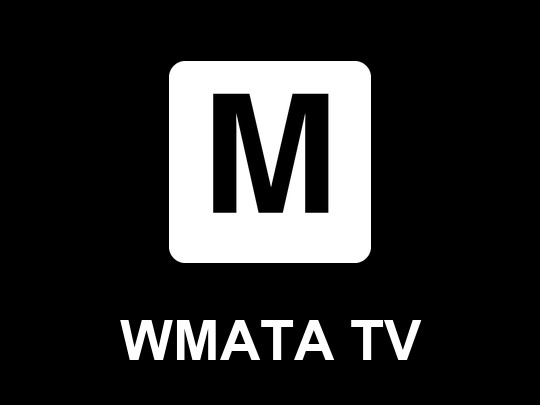

WMATA TVPrivacy Policy
Effective November 5, 2026
This policy explains what information the WMATA TV app for Roku ("the app") handles. The app is made by Max Hardesty ("I", "me").
Information the app collects
None. The app has no accounts or sign-in, and it doesn't ask for your name, email, location or any other personal information. It has no advertising, analytics or tracking.
Information stored on your Roku
The app saves the Metro station you choose on your Roku device so it can show that station the next time it opens. This setting stays on your device and isn't sent to me. Removing the app deletes it.
Services the app connects to
To show arrivals and weather, your Roku connects directly to these services:
- WMATA API (api.wmata.com), for train arrivals at the station you chose. See WMATA's privacy policy.
- Open-Meteo (api.open-meteo.com), for weather at your station's location. See Open-Meteo's terms and privacy information.
As with any internet request, these services can see your network's IP address and the station or location being requested. The app sends them nothing else about you.
Roku
Roku, Inc. may collect information about how you use your Roku device and its apps under its own policies. See Roku's privacy policy.
Children
The app doesn't knowingly collect personal information from anyone, including children under 13.
Changes
If this policy changes, I'll update this page and its effective date.
Contact
Questions about this policy: maxhardesty2000@gmail.com.